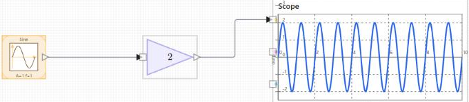

Tutoriel : poser trois blocs, les relier, exécuter et lire le scope.
Ceci est le premier de trois courts tutoriels. Vous construisez un modèle à trois blocs, une source Sine, un Gain et un Scope, puis vous l'exécutez et lisez le résultat. Le modèle n'a ni rebouclage ni dynamique : c'est donc une bonne façon d'apprendre l'éditeur lui-même, à savoir poser des blocs, tracer des fils, modifier des paramètres et lancer une simulation.
Ouvrir l'éditeur
Appelez nflow() depuis la ligne de commande Nelson pour ouvrir un modèle vide. La bibliothèque de blocs est à gauche, le diagramme au centre et l'inspecteur à droite. Sélectionnez un bloc pour voir ses paramètres dans l'inspecteur, ou ne sélectionnez rien pour afficher l'onglet Modèle et ses réglages de simulation.
Poser les blocs
Laissez de l'espace entre les blocs pour que les fils aient la place de se router.
Relier les blocs
Lorsque autoRoute est actif, l'éditeur garde les fils orthogonaux et lisibles quand vous déplacez les blocs. Voir nflow_wire_editing pour le routage manuel, les coins et les jonctions.

Régler les paramètres des blocs
Sélectionnez le bloc Gain et réglez Gain à 2 dans l'inspecteur. Sélectionnez le bloc Sine pour régler son amplitude et sa fréquence, ou conservez les valeurs par défaut. Chaque modification est appliquée au bloc au fur et à mesure de la saisie.
Régler la durée de simulation
Ne sélectionnez rien pour afficher l'onglet Modèle, puis ouvrez Simulation. Réglez Temps d'arrêt (s) sur la durée de l'exécution, par exemple 10. Conservez Temps d'échantillonnage (s) à sa valeur par défaut pour ce modèle.
Exécuter le modèle
Appuyez sur Exécuter dans la barre d'outils au-dessus du diagramme, ou utilisez le menu Simulation. Le Scope se remplit pendant l'exécution. Arrêter arrête l'exécution et conserve les résultats déjà calculés. Réinitialiser remet le temps à zéro et efface les résultats affichés.
Lire le scope
Le Scope montre le sinus amplifié. Sélectionnez le Scope et utilisez l'inspecteur pour régler les plages de temps et de valeurs (t min, t max, y min, y max), afficher les graduations, et définir la couleur du tracé et les libellés d'axes. Laissez un champ de plage vide pour que le Scope s'ajuste aux données.
Pour aller plus loin
Remplacez le Sine par un Step ou un Pulse du groupe Source pour voir comment la sortie suit une entrée différente. Poursuivez ensuite avec nflow_tutorial_continuous pour ajouter un intégrateur et choisir un solveur.
| Version | Description |
|---|---|
| 1.0.0 | version initiale |